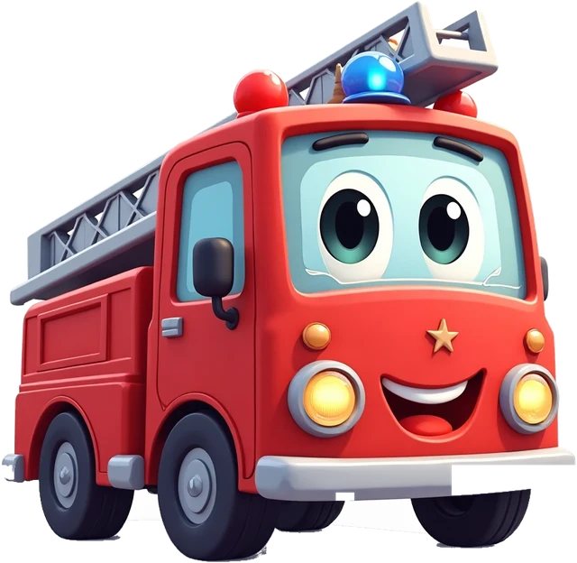

<!doctype html><html lang="ru"><head><meta charset="utf-8"><title>S09 Не мультик</title>
<link rel="stylesheet" href="../kit/reel.css"></head><body><div id="stage"></div>
<script src="../kit/engine.js"></script><script src="../kit/world.js"></script>
<script>
dur(10);
var s = document.getElementById('stage'); s.style.background = 'linear-gradient(#63b8ea,#cdeefb)';
text('hook', 'Не мультик.', 'hook'); set('#hook', { o: 0, y: 30 }); tw('#hook', 0.2, 0.5, { o: [0, 1], y: [30, 0] }, 'back');
function frame(id, x, title, col) {
  s.insertAdjacentHTML('beforeend', '<div class="el" id="' + id + '" style="left:' + x + 'px;top:520px;width:480px;height:900px;border-radius:50px;background:' + col + ';box-shadow:0 24px 50px rgba(0,0,0,.3);overflow:hidden">' +
    '<div style="position:absolute;left:0;width:480px;top:34px;font-size:44px;font-weight:900;text-align:center;color:#fff;text-shadow:0 4px 0 rgba(0,0,0,.3)">' + title + '</div>' +
    '<div style="position:absolute;left:0;width:480px;top:540px;height:120px;background:#5b6470;border-top:6px solid #f2f6fb;border-bottom:6px solid #f2f6fb"></div>' +
    '<div style="position:absolute;left:0;width:480px;top:660px;height:240px;background:#79c86a"></div>' +
    '' +
    '<div class="txt" style="position:absolute;left:0;width:480px;top:760px;font-size:120px">🧒</div></div>');
}
frame('L', 50, 'СМОТРИТ', '#8a94a6'); frame('R', 550, 'ГОВОРИТ', '#2b6cb0');
set('#L', { o: 0, x: -60 }); set('#R', { o: 0, x: 60 });
tw('#L', 0.9, 0.5, { o: [0, 1], x: [-60, 0] }, 'back'); tw('#R', 1.1, 0.5, { o: [0, 1], x: [60, 0] }, 'back');
every(function (t) { set('#Lcar', { x: Math.sin(t * 1.3) * 90 }); });      // «мультик»: машинка ездит туда-сюда, ребёнок смотрит
document.getElementById('L').querySelector('.txt').style.filter = 'grayscale(1)';
s.insertAdjacentHTML('beforeend', '<div class="el txt" id="bub" style="left:560px;top:1080px;width:460px;font-size:64px;color:#ffd93d;text-shadow:0 6px 0 #e0691f">ПРЫЖОК!</div>');
set('#bub', { o: 0, scale: 0.5 });
text('cap', 'Здесь ребёнок говорит,\nа не смотрит.', 'cap'); set('#cap', { o: 0, y: 30 }); tw('#cap', 1.8, 0.5, { o: [0, 1], y: [30, 0] });
function beat(t0) {
  say(t0, 'Скажи прыжок — и машинка подпрыгнет!');
  tw('#bub', t0 + 1.9, 0.3, { o: [0, 1], scale: [0.5, 1] }, 'back'); jump('#Rcar', t0 + 2.2, 200, 0.8); tw('#bub', t0 + 3.6, 0.3, { o: [1, 0] });
}
beat(2.4); beat(5.6);
endCard(8.8, 'МАШИНКИ', 'экранное время, за которое не стыдно', 'ссылка в профиле');
</script></body></html>
